Position
I am a postdoc at the Center for Space Plasma and Aeronomic Research (CSPAR) University of Alabama in Huntsville. My field is gamma-ray bursts, the most luminous explosions in the universe. Previously I was a postdoc at Pennsylvania State University, with Péter Mészáros and at the George Washington University with Alessandra Corsi. I got my PhD from the Eötvös University, Budapest in 2011.Recent work
| 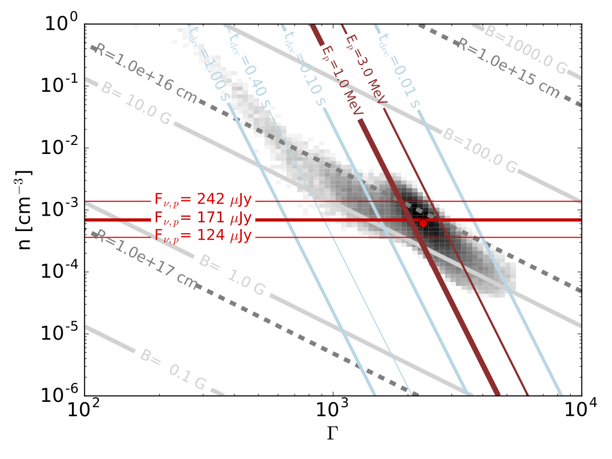 |
0.4 seconds after the first gravitational wave signal observed by LIGO (GW150914), Fermi GBM detected a weak short GRB, having a loosely consistent position with the GW event (GW150914-GBM). Gamma-rays from binary black hole mergers are unexpected, and we need more observations to confirm or to refute such a scenario. In this paper we assume the two are related and analyze how GW observations constrain GRB models. We find that internal shocks and non-dissipative photosphere models can be marginally ruled out. P. Veres, R. D. Preece, A. Goldstein, P. Mészáros, E. Burns, V. Connaughton Gravitational wave observations may constrain gamma-ray burst models: the case of GW 150914 - GBM ApJL, 2016, 824, 37, arXiv/1607.02616This plot shows the constraints GW 150914-GBM places on the GRB physics in the context of the external shock model (gray histogram). Brown lines show the peak energy, red is the peak flux. Also shown are R-deceleration radius, where the shock is the strongest, Click on the image for a larger version |
{kind=link}
Some projects I have been involved in
GRB 090510A: modeling of... the early phase of a prototypical short GRB 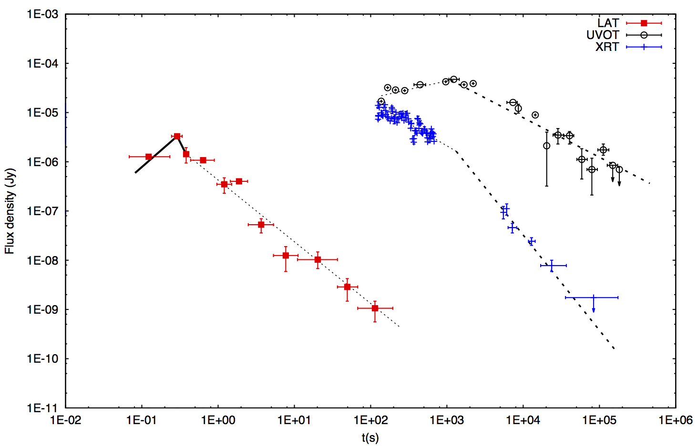 Fraija et al. ApJ, 2016, , , arXiv:1608.01420 |
Fermi GBM's 6 year catalog... shows two populations of GRBs 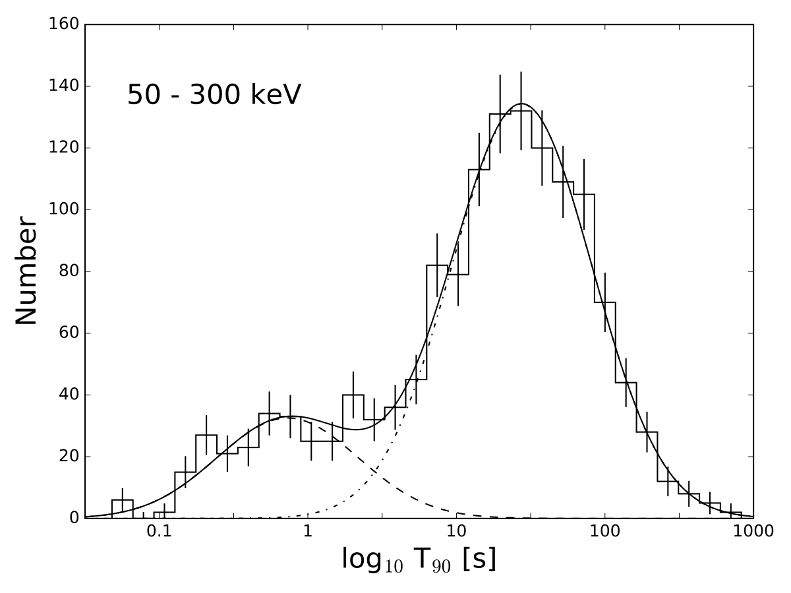 Bhat et al. ApJS, 2016, 805, 86, arXiv:1603.07612 |
V404 Cygni during the 2015 bright state... as seen by Fermi GBM 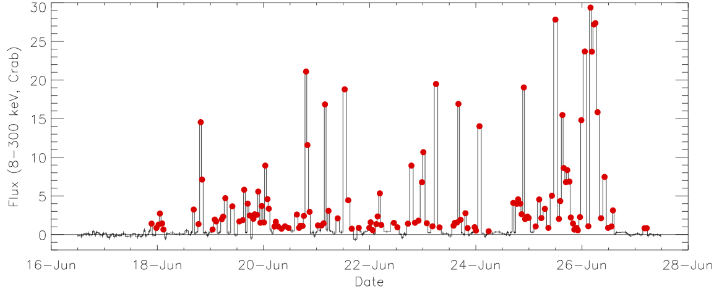 Jenke et al. ApJ, 2016, 826, 37, arXiv:1601.00911 |
Swift observes an ultralong GRB... on its 10th birthday 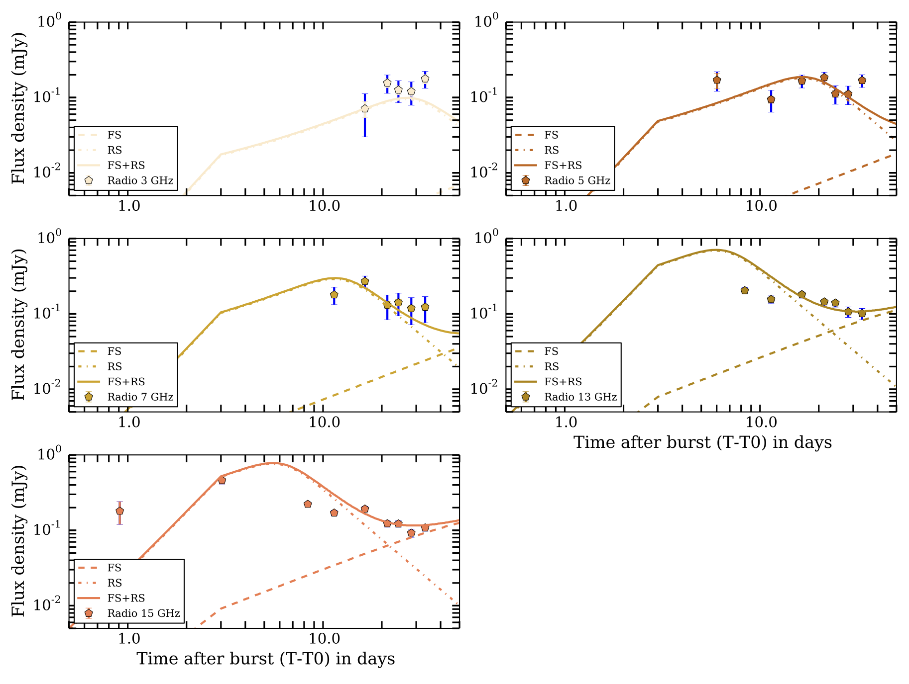 Cucchiara et al. ApJ, 2015, 812, 122, arXiv:1510.00996 |
Relation between GRB Lorentz factor... and minimum timescale variability Sonbas et al. ApJ, 2015, 805, 86,
arXiv:1408.3042
Sonbas et al. ApJ, 2015, 805, 86,
arXiv:1408.3042
|
VERITAS observes GRB 130427A... after ~0.8 days and puts interesting constrains on the very high energy emission. 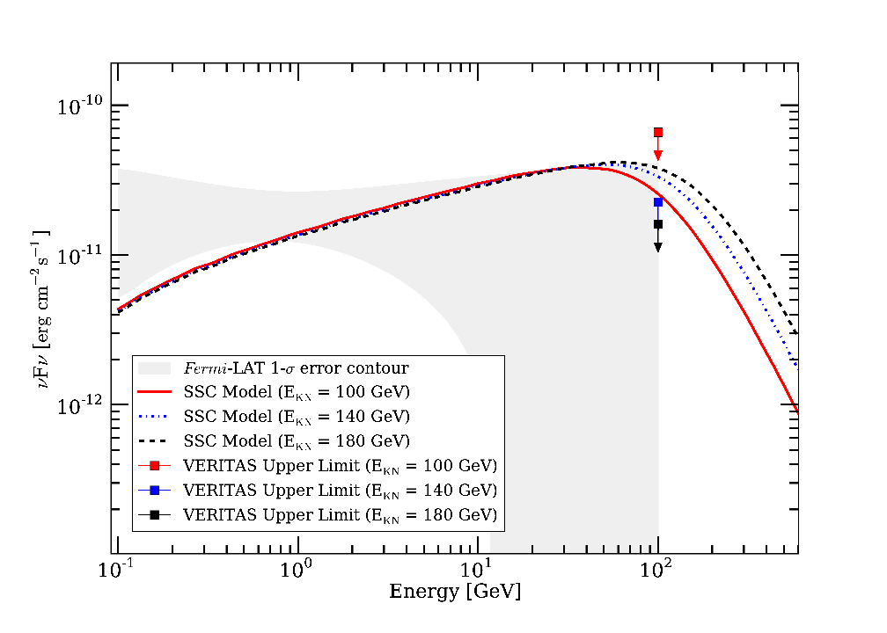 Aliu et al. ApJL, 2014, 795, 3, arXiv:1410.5367 |
GRB jet composition... from correlations between thermal and non-thermal spectral peaks. 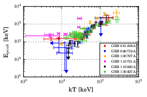 Burgess et al. ApJL, 2014, 794, 43, arXiv:1403.0374 |
The Cherenkov Telescope Array... will follow-up gravitational wave triggers 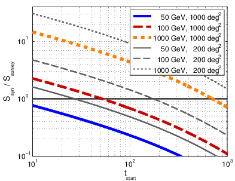 Bartos et al. MNRAS, 2014, 443, 738, arXiv:1403.6119 |
Link between prompt and... afterglow data based on 9 years of Swift observations. Grupe et al. ApJS, 2013, 209, 20,
arXiv:1305.3236
Grupe et al. ApJS, 2013, 209, 20,
arXiv:1305.3236
|
{kind=link}
{kind=link}
{kind=link}
{kind=link}
{kind=link}
{kind=link}
{kind=link}
Very early radio observations of GRB 130907A
|
Very Large Array observations 4 hours after the GRB onset provided useful insights into the nature of the GRB afterglow. We model this burst with a wind medium at early times, which then changes to a constant density interstellar medium. We explore weather there is a reverse shock present and conclude that if it is, we cannot distinguish its signature from the purely forward shock dominated outflow. Péter Veres, Alessandra Corsi, Dale A. Frail, S. Bradley Cenko, Daniel PerleyEarly-time VLA Observations and Broadband Afterglow Analysis of the Fermi/LAT Detected GRB 130907A ApJ, 2015, 810, 31, arXiv/1411.7368 The figure shows radio observations at different frequencies and the possible physical models. |
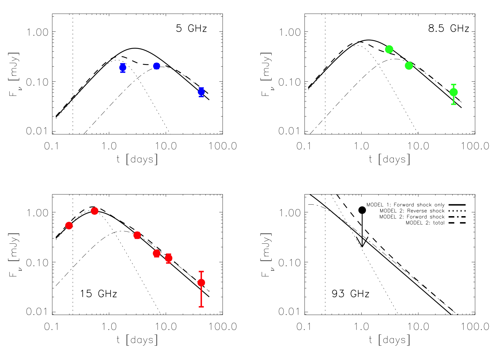 |
{kind=link}
TeV emission from short gamma-ray brusts
| 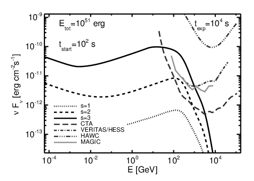 |
Some short gamma-ray bursts show extended emission that is softer than the initial short pulse. This might be the signature of material injected at later times into the decelerating shock complex. The late injection can be modeled in two ways: either an instantaneous injection releases material with a range of Lorentz factors (assumed to be power-law distributed with index s), or a central engine that is active for a long time, e.g. a magnetar. We calculated the high energy component which can be expected from such a late injection. The main source of the high energy emission is the synchrotron self-Compton process. Veres P., Mészáros P. Prospects for GeV-TeV Detection of Short Gamma-Ray Bursts with Extended Emission ApJ, 2014, 787, 168, arXiv/1312.0590The figure shows synchrotron self-Compton spectrum for late injection models and the sensitivity of current and future Cherenkov telescopes. |
{kind=link}
Fitting LAT GRB spectra with a general dynamic model
|
After a qualitative analysis, we have shown that the model with dominant magnetic fields can interpret the brightest GRBs observed by Fermi. We have developed a model with general acceleration with several free parameters (luminosity, coasting Lorentz factor, ambient density, etc.). We then folded this model through the Fermi detector's response matrices to match the observations. We found that the model is capable to interpret the data. Veres, Péter; Zhang, Bin-Bin; Mészáros, Péter Magnetically and Baryonically Dominated Photospheric Gamma-Ray Burst Model Fits to Fermi LAT Observations ApJ, 2013, 764, 94, arXiv/1210.7811The figure shows a spectral fit of the Fermi GBM and LAT data of GRB 090510A with a magnetic model. Click on the figure for a larger version. |
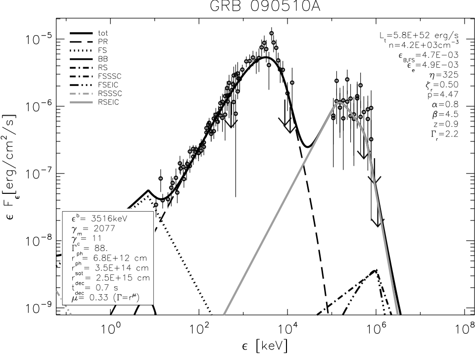 |
{kind=link}
Extremely high peak energy of GRB 110721A
| 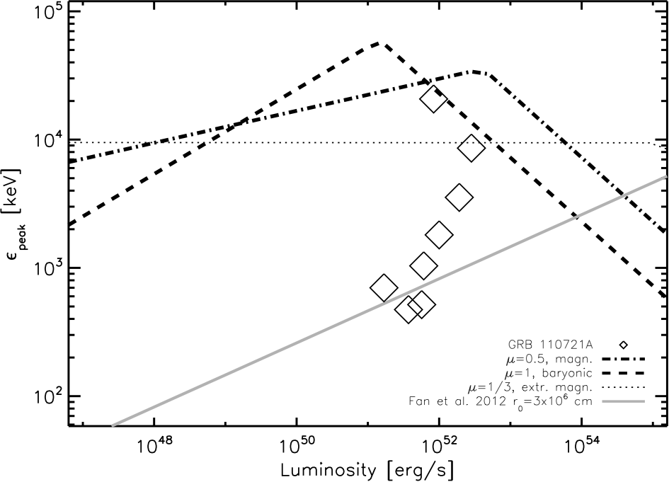 |
GRB 110721A was observed by Fermi and after careful spectral analysis the peak at the beginning of the burst was observed to be 15 MeV, one of the highest ever measured. This poses problems for the standard internal shock interpretation. We showed that in the framework of a photospheric model, this high peak energy can be achieved by synchrotron emission. Veres, Péter; Zhang, Bin-Bin; Mészáros, Péter The extremely high peak energy of GRB 110721A in the context of a dissipative photosphere synchrotron emission model ApJL, 2012, 761, L18, arXiv/1208.1790The figure shows the allowed region by the synchrotron model for the peak energy (below the dashed and dash-dotted thick lines for different types of acceleration). Diamonds mark the evolution of the peak energy with luminosity for this burst. |
{kind=link}
Magnetic GRB model
|
We worked out the details of a model, where the Lorentz factor of the jet increases more gradually (as radius^1/3) than in baryonic models which were mostly considered so far. The prompt emission originates from the photosphere, the GeV emission observed by Fermi-LAT is from the external inverse Compton upscattering of the prompt photons off the ambient medium's electrons. This model gives a qualitatively correct picture of the observations. Take a look at my presentation of this topic at the Munich conference in 2012 here or here. Veres, P.; Mészáros, P., Single- and Two-component Gamma-Ray Burst Spectra in the Fermi GBM-LAT Energy Range ApJ 2012 755, 12, arXiv/1202.2821The figure shows a qualitative model spectrum for magnetically dominated dynamics with photospheric emission at MeV and external inverse Compton components at GeV. Thick gray lines show the total emission with or without considering the reverse shock. |
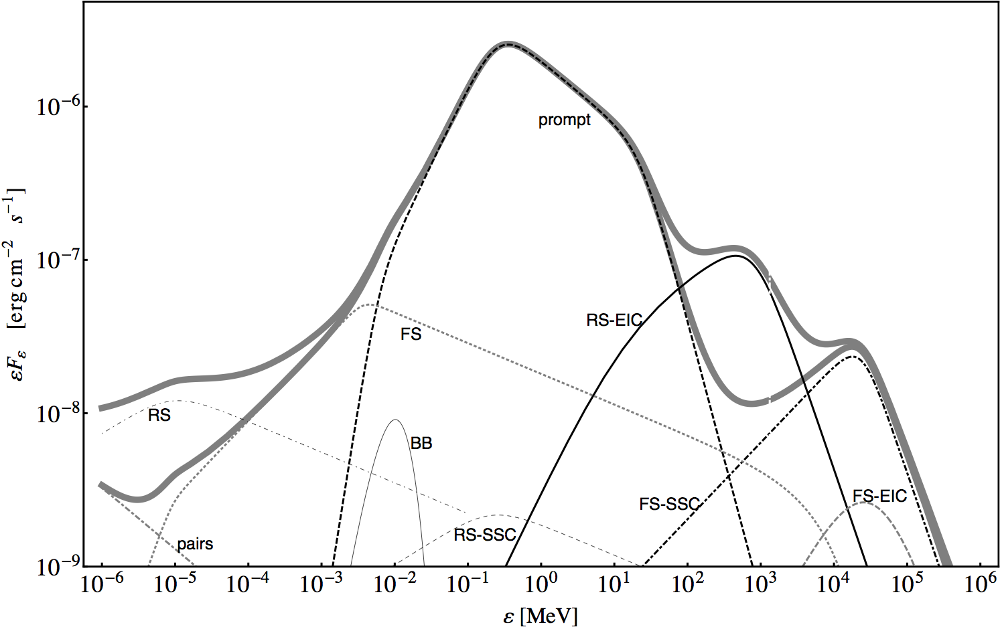 |
{kind=link}
Péter Veres
CRH-2092
320 Sparkman Drive
Huntsville, AL 35805
Email: pv0004 AT uah.edu
Phone: (814) 865-8484
| CV | my resume | |
| links | my links | |
| misc | misc. |
| qlinks ads gml woa |
| Presentations | |
|---|---|
| 8th Huntsville GRB Symposium | 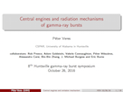 |
| Time Projection Chamber for MeV Astrophysics workshop | 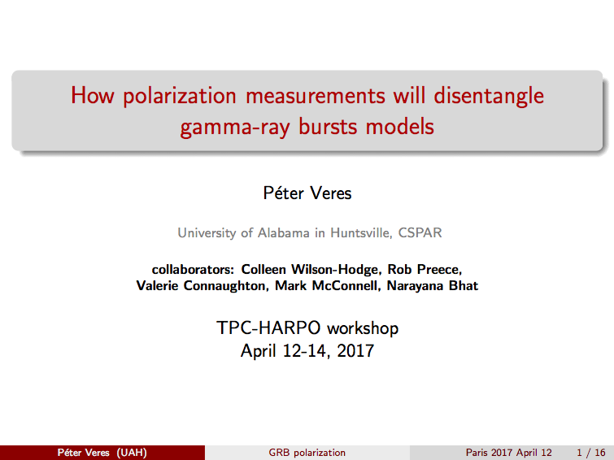 |